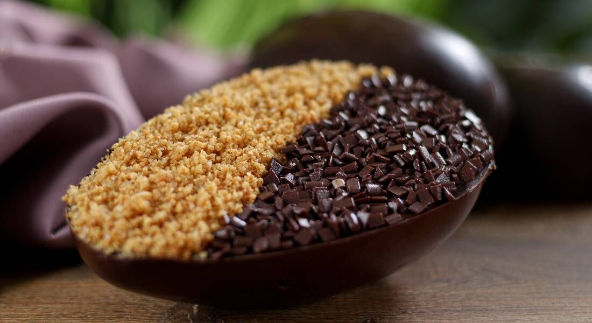

Ingredientes:
Modo de Preparo:
Ingredientes:
Modo de Preparo:
Ingredientes:
Modo de Preparo:
| Tipo de Ovo | Preço | Peso |
|---|---|---|
| Ovo de Páscoa de Chocolate Tradicional | R$ 50.00 |  |
| Ovo de Páscoa Recheado com Nutella: | R$ 150.00 | |
| Ovo de Páscoa Trufado de Maracujá: | R$ 250.00 |